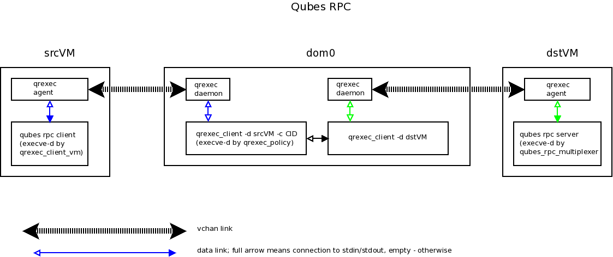

Qrexec v2 (deprecated)
(This page is about qrexec v2. For qrexec v3, see here .)
Qubes qrexec is a framework for implementing inter-VM (incl. Dom0-VM) services. It offers a mechanism to start programs in VMs, redirect their stdin/stdout, and a policy framework to control this all.
Qrexec basics
During each domain creation a process named qrexec-daemon is started in dom0, and a process named qrexec-agent is started in the VM. They are connected over vchan channel.
Typically, the first thing that a qrexec-client instance does is to send a request to qrexec-agent to start a process in the VM. From then on, the stdin/stdout/stderr from this remote process will be passed to the qrexec-client process.
E.g., to start a primitive shell in a VM type the following in Dom0 console:
[user@dom0 ~]$ /usr/lib/qubes/qrexec-client -d <vm name> user:bash
The string before first semicolon specifies what user to run the command as.
Adding -e on the qrexec-client command line results in mere command execution (no data passing), and qrexec-client exits immediately after sending the execution request.
There is also the -l <local program> flag, which directs qrexec-client to pass stdin/stdout of the remote program not to its stdin/stdout, but to the (spawned for this purpose) <local program>.
The qvm-run command is heavily based on qrexec-client. It also takes care of additional activities (e.g., starting the domain, if it is not up yet, and starting the GUI daemon). Thus, it is usually more convenient to use qvm-run.
There can be almost arbitrary number of qrexec-client processes for a domain (i.e., qrexec-client processes connected to the same qrexec-daemon); their data is multiplexed independently.
There is a similar command line utility available inside Linux AppVMs (note the -vm suffix): qrexec-client-vm that will be described in subsequent sections.
Qubes RPC services
Apart from simple Dom0->VM command executions, as discussed above, it is also useful to have more advanced infrastructure for controlled inter-VM RPC/services. This might be used for simple things like inter-VM file copy operations, as well as more complex tasks like starting a DispVM, and requesting it to do certain operations on a handed file(s).
Instead of implementing complex RPC-like mechanisms for inter-VM communication, Qubes takes a much simpler and pragmatic approach and aims to only provide simple pipes between the VMs, plus ability to request pre-defined programs (servers) to be started on the other end of such pipes, and a centralized policy (enforced by the qrexec-policy process running in dom0) which says which VMs can request what services from what VMs.
Thanks to the framework and automatic stdin/stdout redirection, RPC programs are very simple; both the client and server just use their stdin/stdout to pass data. The framework does all the inner work to connect these file descriptors to each other via qrexec-daemon and qrexec-agent. Additionally, DispVMs are tightly integrated; RPC to a DispVM is a simple matter of using a magic $dispvm keyword as the target VM name.
All services in Qubes are identified by a single string, which by convention takes a form of qubes.ServiceName. Each VM can provide handlers for each of the known services by providing a file in /etc/qubes-rpc/ directory with the same name as the service it is supposed to handle. This file will then be executed by the qrexec service, if the dom0 policy allowed the service to be requested (see below). Typically, the files in /etc/qubes-rpc/ contain just one line, which is a path to the specific binary that acts as a server for the incoming request, however they might also be the actual executable themselves. Qrexec framework is careful about connecting the stdin/stdout of the server process with the corresponding stdin/stdout of the requesting process in the requesting VM (see example Hello World service described below).
Qubes RPC administration
Besides each VM needing to provide explicit programs to serve each supported service, the inter-VM service RPC is also governed by a central policy in Dom0.
In dom0, there is a bunch of files in /etc/qubes-rpc/policy/ directory, whose names describe the available RPC actions; their content is the RPC access policy database. Some example of the default services in Qubes are:
qubes.Filecopy
qubes.OpenInVM
qubes.ReceiveUpdates
qubes.SyncAppMenus
qubes.VMShell
qubes.ClipboardPaste
qubes.Gpg
qubes.NotifyUpdates
qubes.PdfConvert
These files contain lines with the following format:
srcvm destvm (allow|deny|ask)[,user=user_to_run_as][,target=VM_to_redirect_to]
You can specify srcvm and destvm by name, or by one of $anyvm, $dispvm, dom0 reserved keywords (note string dom0 does not match the $anyvm pattern; all other names do). Only $anyvm keyword makes sense in the srcvm field (service calls from dom0 are currently always allowed, $dispvm means “new VM created for this particular request” - so it is never a source of request). Currently, there is no way to specify source VM by type, but this is planned for Qubes R3.
Whenever a RPC request for service named “XYZ” is received, the first line in /etc/qubes-rpc/policy/XYZ that matches the actual srcvm/destvm is consulted to determine whether to allow RPC, what user account the program should run in target VM under, and what VM to redirect the execution to. If the policy file does not exist, user is prompted to create one manually; if still there is no policy file after prompting, the action is denied.
On the target VM, the /etc/qubes-rpc/XYZ must exist, containing the file name of the program that will be invoked.
Requesting VM-VM (and VM-Dom0) services execution
In a src VM, one should invoke the qrexec client via the following command:
$ /usr/lib/qubes/qrexec-client-vm <target vm name> <service name> <local program path> [local program arguments]
Note that only stdin/stdout is passed between RPC server and client – notably, no cmdline argument are passed.
The source VM name can be accessed in the server process via QREXEC_REMOTE_DOMAIN environment variable. (Note the source VM has no control over the name provided in this variable–the name of the VM is provided by dom0, and so is trusted.)
By default, stderr of client and server is logged to respective /var/log/qubes/qrexec.XID files, in each of the VM.
Be very careful when coding and adding a new RPC service! Any vulnerability in a RPC server can be fatal to security of the target VM!
If requesting VM-VM (and VM-Dom0) services execution without cmdline helper, connect directly to /var/run/qubes/qrexec-agent-fdpass socket as described below.
Qubes RPC "Hello World" service
We will show the necessary files to create a simple RPC call that adds two integers on the target VM and returns back the result to the invoking VM.
Client code on source VM (
/usr/bin/our_test_add_client)#!/bin/sh echo $1 $2 # pass data to rpc server exec cat >&$SAVED_FD_1 # print result to the original stdout, not to the other rpc endpoint
Server code on target VM (
/usr/bin/our_test_add_server)#!/bin/sh read arg1 arg2 # read from stdin, which is received from the rpc client echo $(($arg1+$arg2)) # print to stdout - so, pass to the rpc client
Policy file in dom0 (
/etc/qubes-rpc/policy/test.Add)$anyvm $anyvm ask
Server path definition on target VM (
/etc/qubes-rpc/test.Add)/usr/bin/our_test_add_server
To test this service, run the following in the source VM:
$ /usr/lib/qubes/qrexec-client-vm <target VM> test.Add /usr/bin/our_test_add_client 1 2
and we should get “3” as answer, provided dom0 policy allows the call to pass through, which would happen after we click “Yes” in the popup that should appear after the invocation of this command. If we changed the policy from “ask” to “allow”, then no popup should be presented, and the call will always be allowed.
Note: For a real world example of writing a qrexec service, see this blog post.
More high-level RPCs?
As previously noted, Qubes aims to provide mechanisms that are very simple and thus with very small attack surface. This is the reason why the inter-VM RPC framework is very primitive and doesn’t include any serialization or other function arguments passing, etc. We should remember, however, that users/app developers are always free to run more high-level RPC protocols on top of qrexec. Care should be taken, however, to consider potential attack surfaces that are exposed to untrusted or less trusted VMs in that case.
Qubes RPC internals
(This is about the implementation of qrexec v2. For the implementation of qrexec v3, see here . Note that the user API in v3 is backward compatible: qrexec apps written for Qubes R2 should run without modification on Qubes R3.)
Dom0 tools implementation
Players:
/usr/lib/qubes/qrexec-daemon: started by mgmt stack (qubes.py) when a VM is started./usr/lib/qubes/qrexec-policy: internal program used to evaluate the policy file and making the 2nd half of the connection./usr/lib/qubes/qrexec-client: raw command line tool that talks to the daemon via unix socket (/var/run/qubes/qrexec.XID)
Note: None of the above tools are designed to be used by users.
Linux VMs implementation
Players:
/usr/lib/qubes/qrexec-agent: started by VM bootup scripts, a daemon./usr/lib/qubes/qubes-rpc-multiplexer: executes the actual service program, as specified in VM’s/etc/qubes-rpc/qubes.XYZ./usr/lib/qubes/qrexec-client-vm: raw command line tool that talks to the agent.
Note: None of the above tools are designed to be used by users. qrexec-client-vm is designed to be wrapped up by Qubes apps.
Windows VMs implementation
%QUBES_DIR% is the installation path (c:\Program Files\Invisible Things Lab\Qubes OS Windows Tools by default).
%QUBES_DIR%\bin\qrexec-agent.exe: runs as a system service. Responsible both for raw command execution and interpreting RPC service requests.%QUBES_DIR%\qubes-rpc: directory withqubes.XYZfiles that contain commands for executing RPC services. Binaries for the services are contained in%QUBES_DIR%\qubes-rpc-services.%QUBES_DIR%\bin\qrexec-client-vm: raw command line tool that talks to the agent.
Note: None of the above tools are designed to be used by users. qrexec-client-vm is designed to be wrapped up by Qubes apps.
All the pieces together at work
Note: This section is not needed to use qrexec for writing Qubes apps. Also note the qrexec framework implemention in Qubes R3 significantly differs from what is described in this section.
The VM-VM channels in Qubes R2 are made via “gluing” two VM-Dom0 and Dom0-VM vchan connections:

Note that Dom0 never examines the actual data flowing in neither of the two vchan connections.
When a user in a source VM executes qrexec-client-vm utility, the following steps are taken:
qrexec-client-vmconnects toqrexec-agent’s/var/run/qubes/qrexec-agent-fdpassunix socket 3 times. Reads 4 bytes from each of them, which is the fd number of the accepted socket in agent. These 3 integers, in text, concatenated, form “connection identifier” (CID)qrexec-client-vmwrites to/var/run/qubes/qrexec-agentfifo a blob, consisting of target vmname, rpc action, and CIDqrexec-client-vmexecutes the rpc client, passing the above mentioned unix sockets as process stdin/stdout, and optionally stderr (if thePASS_LOCAL_STDERRenv variable is set)qrexec-agentpasses the blob toqrexec-daemon, viaMSG_AGENT_TO_SERVER_TRIGGER_CONNECT_EXISTINGmessage over vchanqrexec-daemonexecutesqrexec-policy, passing source vmname, target vmname, rpc action, and CID as cmdline argumentsqrexec-policyevaluates the policy file. If successful, creates a pair ofqrexec-clientprocesses, whose stdin/stdout are cross-connected.The first
qrexec-clientconnects to the src VM, using the-c ClientIDparameter, which results in not creating a new process, but connecting to the existing process file descriptors (these are the fds of unix socket created in step 1).The second
qrexec-clientconnects to the target VM, and executesqubes-rpc-multiplexercommand there with the rpc action as the cmdline argument. Finally,qubes-rpc-multiplexerexecutes the correct rpc server on the target.
In the above step, if the target VM is
$dispvm, the DispVM is created via theqfile-daemon-dvmprogram. The latter waits for theqrexec-clientprocess to exit, and then destroys the DispVM.
TODO: Protocol description (“wire-level” spec)